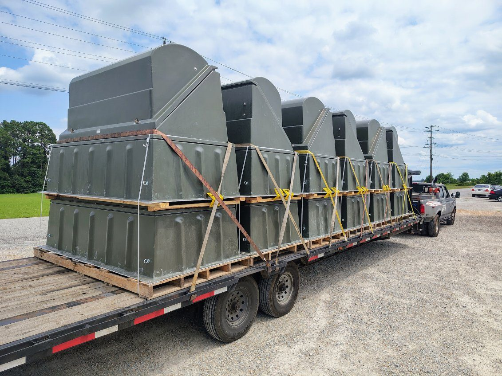

California issues oversize/overweight permits through Caltrans. A load is permitted once it exceeds 8'6" wide, 14' tall, or 80,000 lbs gross. The wrinkle is routing: California restricts oversized trucks to designated networks (STAA vs non-STAA / Terminal Access routes), so the permit is as much about the legal path as the dimensions.
California is one of the more complex states to move oversized freight through — not because the limits are unusual, but because the state is strict about which roads big trucks may use. Here's how Caltrans permitting works and where shippers get tripped up.
What needs a permit
A load is legal in California up to 8'6" wide, 14' tall, and 80,000 lbs gross, with length limits that depend on the trailer and the route. Cross any of those and you need a Caltrans transportation permit for the state highways, plus separate permits from any city or county whose roads you touch.

The routing catch: STAA vs. non-STAA
This is the part that surprises out-of-state shippers. California classifies its truck routes into networks — the federal STAA network (interstates and designated highways that take the biggest legal trucks) and shorter California Legal / Terminal Access routes. Oversized and long combinations can't just take the shortest line; the permit specifies a legal path that keeps the load on roads engineered for it, around tight interchanges, low structures, and weight-restricted bridges. A route that looks fine on a map can be non-viable for a long or heavy rig.
How permits issue
Caltrans issues single-trip permits for one load on one route and annual permits for carriers running repeat oversized freight within set limits. As with every state, the permit locks to your exact dimensions and weight. Overweight loads also have to satisfy California's axle and bridge limits, which is why heavy loads add axles rather than deck.
Escorts and curfews
Pilot cars are required as the load gets wider — commonly front and/or rear escorts past certain widths, with a lead car for over-height loads. Travel is generally daylight-only for oversized loads, with curfews through the Los Angeles, San Francisco Bay Area, and San Diego metros during peak hours. Wind and weather can hold tall loads on the mountain passes.
Superloads and corridors
Extreme loads route as superloads with engineered review and bridge analysis. Most California oversized freight runs the I-5, I-10, I-15, I-80, and Highway 99 corridors linking the ports, the Central Valley, and the interstate network out of state.
Bottom line
- California legal limits: 8'6" wide, 14' tall, 80,000 lbs gross — permits start past any of them.
- Caltrans issues the state permit; cities and counties permit their own roads.
- Routing is the hard part — oversized trucks are held to STAA / designated networks.
- Pilot cars scale with width; daylight-only with metro curfews; superloads get engineered routing.
We handle Caltrans permitting, route selection, and escorts as part of every California move — see heavy haul transport or send your load and route for a quote.